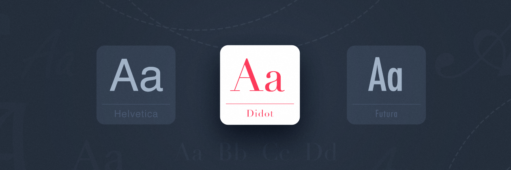
MakicLin
09月27日
第四章：选对字体只需四步
| 本文为付费栏目文章，您已订阅，可阅读全文 |
欢迎回来
字体和配色是排版中非常重要的一步，所以在进入排版相关内容之前，我们还要再扎实一下基础知识。之前第二、三章已经讲解了中英文字体的基本知识，这一章我们聊聊如何选择字体。
一个「合适的字体」可以是一款设计成败的关键。我见过很多人喜欢给自己的手机系统更换字体，要么显得「可爱」要么显得「帅气」。比如这样：
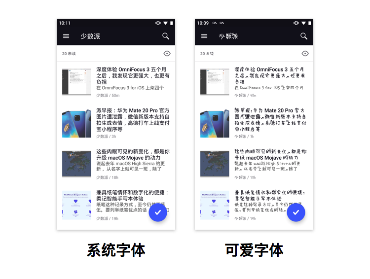
默认字体与可爱字体的对比
实际上，这些可爱帅气的字体在一定程度上影响了文字的可读性，看文字反而更加疲劳。那么，对于手机系统，怎么样的字体才算「正确」？对于阅读类 app 又是如何？让我们带着这些问题开始今天的学习。
选对字体，要了解这些知识
除了字体设计本身，一些共通的属性也会影响到排版的美感，我们一起来了解一下这些属性。
字号（Size）
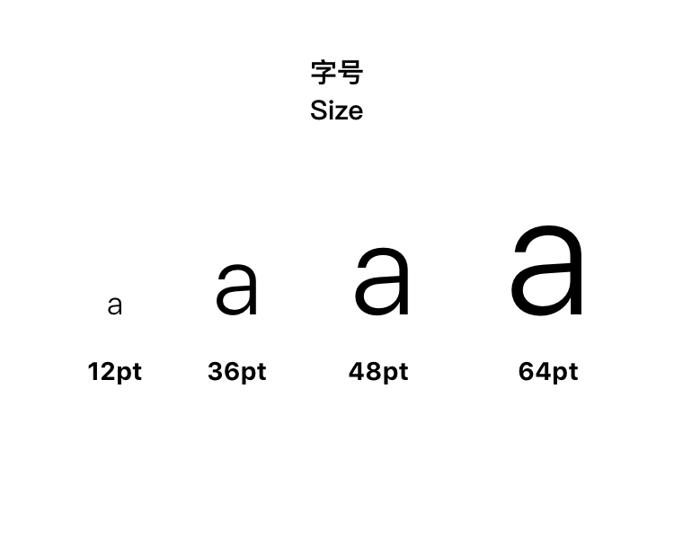
字号
字号就是字的大小，排版领域使用的字号单位非常多：
- 磅 或 点（pt）：以 pt 作为单位是最普遍适用的，在几乎任何设计软件中你都可以使用 pt 作为字号单位，而且我们也对此非常熟悉，是我最推荐使用的字号单位。8pt 以下的字号很难看清楚，所以通常正文字号会控制在 8pt 到 16pt 之间。另外，72 磅 = 1 英寸，这也是为什么一般字号选择菜单中最大的数目是 72。
- 派卡（pica）：专业排版中会使用的单位，1 派卡 = 1/6 英寸 = 12 磅。无论是日常生活工作还是专业的排版，派卡露面的机会都不多，也没有使用的必要。
- 中文字号：初号，小一等等。中文字号是中文环境里一个特殊的存在，正在被人们淡忘，但在公文排版中经常使用。它覆盖了从 6.5pt 到 42pt 的十四个字号，这也几乎是我们日常写作时需要用到的所有字号了，中文字号与磅的对应关系如下图：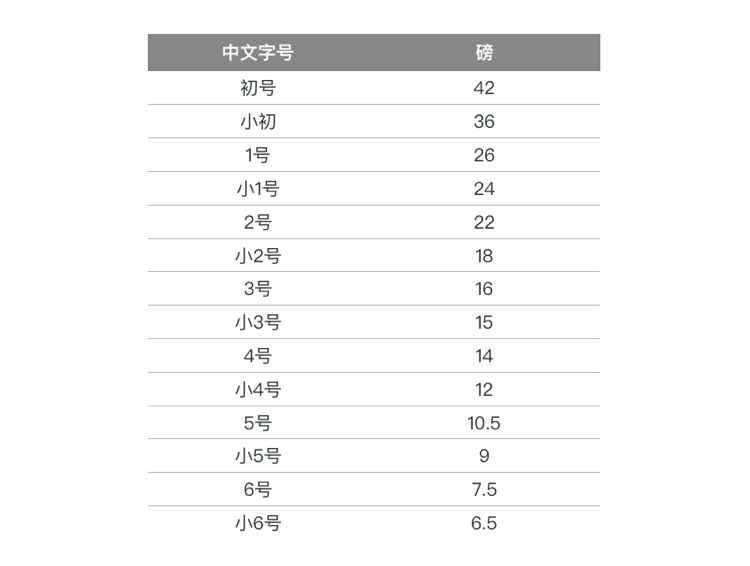中文字号与磅的对应转换中文字号的特点就是分级少，名称易于记忆。虽然覆盖的字号范围有点小，但用起来很快。通常正文字体使用小四或四号。
- 像素（pixel，px）：网页/程序开发领域常用 px，其特点因为用了像素这种绝对单位，不会因为屏幕改变而出现较大的视觉误差。
- rem，em：这是两种网页前端开发经常使用的单位，它是一种相对的字号大小。1em 是「正常文字大小」，2.2em 则代表 2.2 倍正常文字大小。而 rem 则是「root em」的意思，即 em 会有继承关系，而 rem 在全局中保持一致。这种表达方式让字号成为了一个「变量」，对于网页开发来说很方便，但在设计软件中无法使用。
- 更多为了开发而设定的字体单位：为了方便应用界面的设计和开发，一些操作系统单独制定了字体单位。比如安卓系统的开发环境就有 dp，sp 等。这些字体单位仅在特定的环境下使用，需要时进行学习和转换即可。
字重（Weight）
字重，即字的粗细。从最细的 Ultra Light 到正常的 Regular 到最粗的 Extra Bold 可以有很多级字重。分级的名字也没有统一标准，有些字体喜欢用形容词（比如 Light、Thin、Bold），有些喜欢使用数字来区分字重，比如 40，50，60……
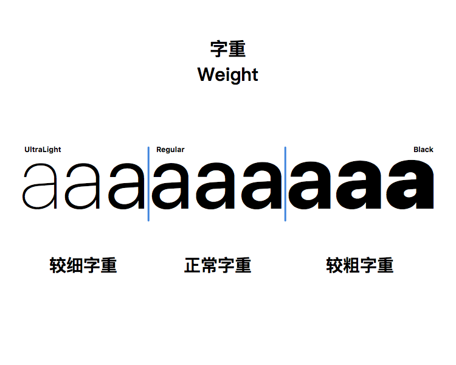
字重
通常情况下我们会使用正常字重（Regular）作为正文字体，在可以看清楚的情况下也会使用较细的字重。较粗的字重则会应用于标题，小节标题以及加粗起到强调的作用。
字距（Tracking）、单字间距（Kerning）、行距（Leading）
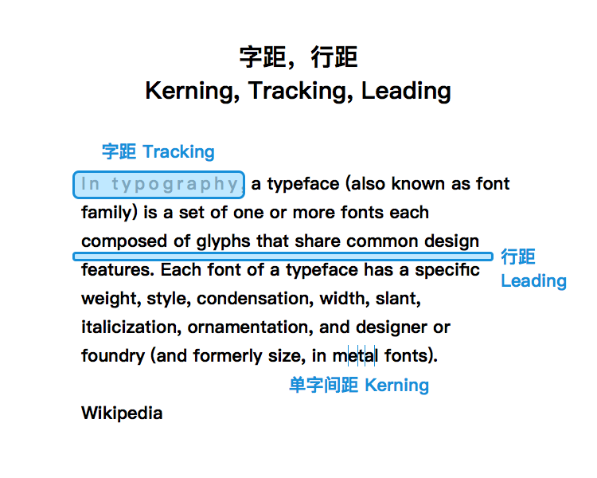
字距、单字间距、行距
字距（Tracking）是指一组文字之间相互间隔的距离，字间距影响了一行或者一个段落的文字密度。通常情况下，字间距已经自动调整得很好，无需自己调整。缩小字间距可以让你在同样大小的区域装下更多内容，而加大字间距则可以让段落看起来更轻松，更有仪式感。
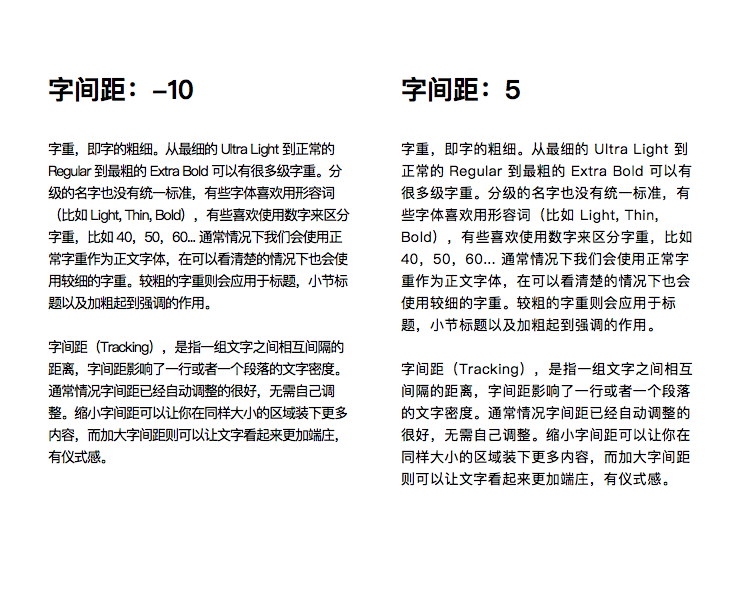
字间距对段落的影响
你可能会发现，字间距为什么没有一个单位呢？实际上字间距调整时的度量单位都是 1/1000 em，这是一种相对测量单位，以当前的全角字宽作为参考单位。在 6 磅大小的字体中，1 em（即 1 个全角字宽）等于 6 磅；在 10 磅的字体中，1 em 等于 10 磅。这样的度量单位有利于与当前的文字大小成严格比例。所以不要奇怪于调整大字号字间距时可能会出现非常大的数字，比如 200。
单字间距（Kerning）是特定字之间的距离，Kerning 的调整只会影响光标左边和光标右边的字距。由于汉字方块字的特性，在中文排版中几乎无需调节 Kerning，在英文排版中如果字号较大（比如 LOGO，Banner 标题等）Kerning 的调整就非常有必要。
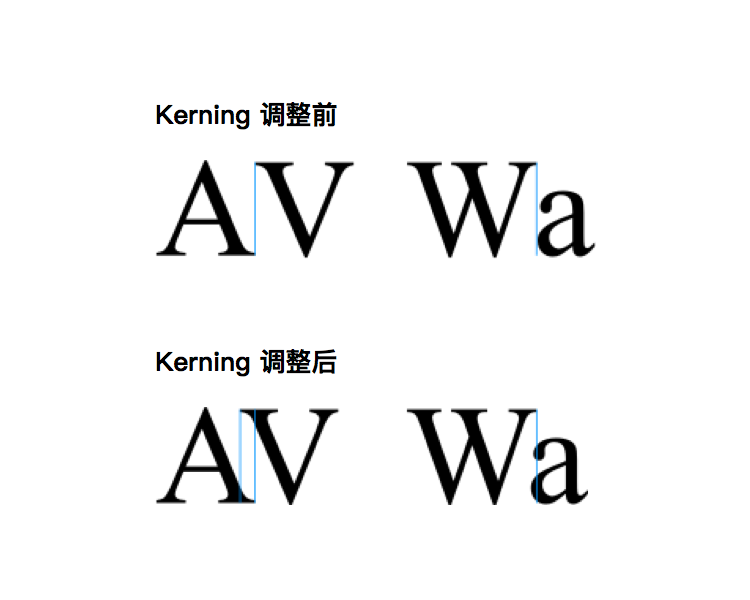
Kerning 调整前后对比
行距（Leading）指代字体连续行的基线间的距离，通常大于字号一些，比如 8pt 字配合 10pt 行距。行距可以大幅度影响一个段落的文字密度，进而影响阅读体验。减小行距会让段落看起来更密，能装下更多东西的同时阅读压力也相应增加；增大行距则会让每一行都舒展开来，减少阅读压力，同时段落的高度不得不增加，会让段落读起来感觉更长。
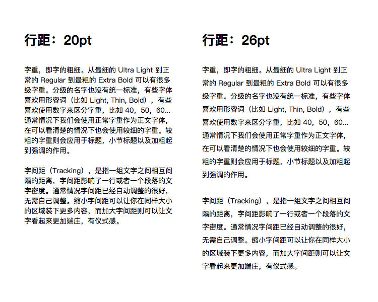
行距对段落的影响
另外，由于中文字方方正正，英文字母有升部与降部，在同样行距下中文字的行会显得更加紧密，所以在中英混排的时候要注意到这一点。
页边距（Margin）
页边距是页面四周留白的部分，它确定了页面中内容的起点和终点。理论上页边距外是不应该出现正文文字的。标准的页边距为 1 英寸，约为 2.5cm。更大的页边距能够让页面显得更加庄重，视觉焦点也比较集中；较小的页边距可以给内容腾出更多的空间，承载更多的内容。
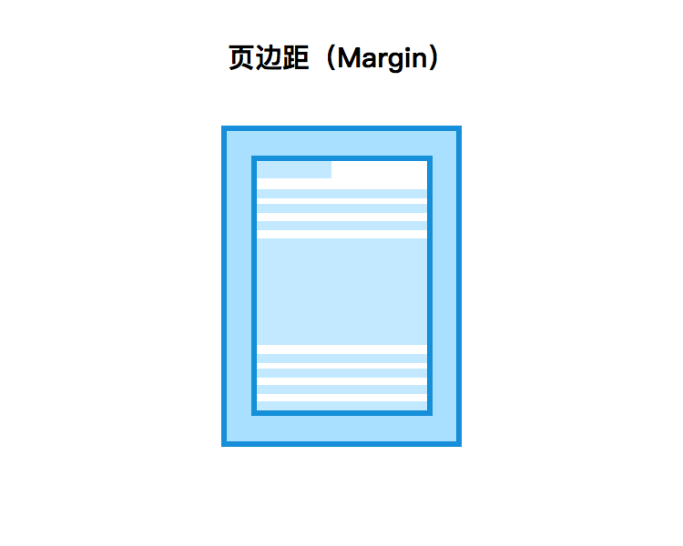
页边距
段落对齐方式
段落对齐的方式通常有如下几种：
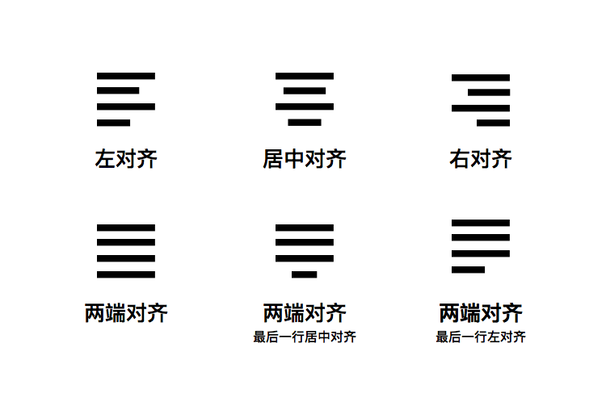
几种段落对齐方式
大家应该对以上这些对齐方式比较熟悉了。在从左至右的阅读环境下，我们通常习惯左对齐文字。居中对齐通常同来写诗集之类，但现在不少微信公众号的文章也在用居中对齐。
需要特殊说明的是「两端对齐」这种对齐方式。两端对齐即是将行长与文本框强行对齐，而剩下两种则是妥协版「两端对齐」，它允许最后一行文字的行长不与文本框同宽，以给整段文字更大的自由度。这两种对齐方式的好处能让文字像豆腐块一样排在纸上，显得很规整。于此同时要注意：由于是强行对齐，为了照顾行宽，行内的字距很有可能是乱掉的。更可怕的情况是出现所谓的「洞」与「河」（即单独和连续的异常大字距），是非常影响阅读的。
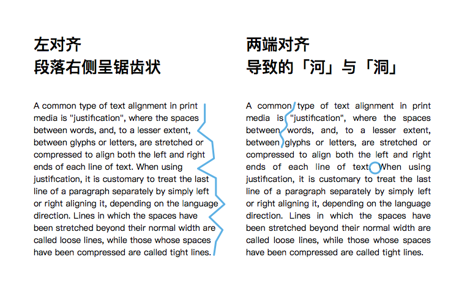
对齐方式对段落的影响
这个时候就要手动去调节乱掉的字距了。由于英文字母的宽度不同，间距不同，如果在英文排版时选择「左右对齐」和「两端对齐」字距必然会乱掉，就会多出不少工作量。
展示字体与正文字体（Display font, Paragraph font）
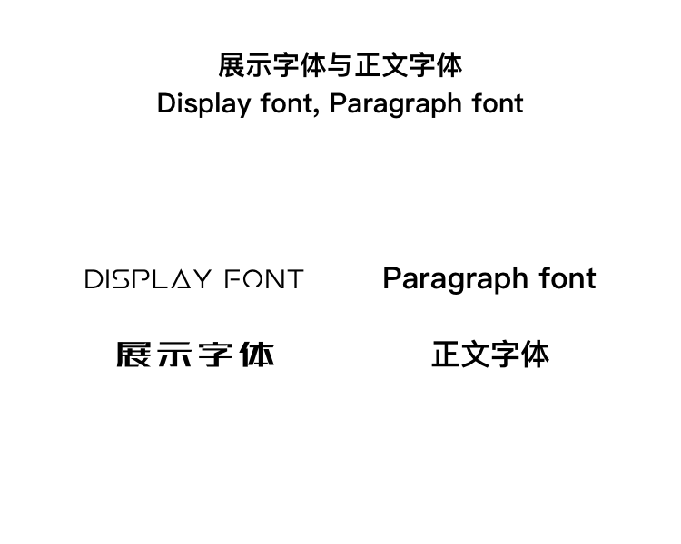
展示字体与正文字体
字体也可以分为有适用于标题的字体和适用于正文的字体两种。适用于标题的字体通常更加华丽特殊引人注目，但作为长段落出现时可读性较差；正文字体看起来更加朴实平常，更多注重在长段落的表现上，所以适合做正文字体。
有些字体本身就会有标题字体以及正文字体之分。比如苹果正在使用的 San Francisco 就有 San Francisco Display 和 San Francisco Text 两种。San Francisco Display 更适合做标题，专门为大字号优化；San Francisco Text 适合作为长段落中的字体大量显示，为小字号优化。可以看出 Text 版本有着更大的字怀（复习一下第二章的内容：字怀是指字母的全封闭或半封闭区域。），避免小字号时字怀消失，而且不仅是字体设计有所不同，默认的字间距也发生了改变。
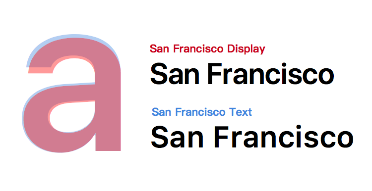
同字号同字重下 San Francisco Display 与 San Francisco Text 的对比
除了显示字体和正文字体之外，虽然没有「脚注字体」之类的字体，但我们也应该得到启发：既然标题和正文会有字体上的区分，我们对于脚注，页码等等元素也应该有区分对待，由我们自己完成对字体的优化。
字体（Typeface）、字形（Font）、字型（Glyph）
无论是在英文世界还是中文世界，字体、字形与字型这三个概念也经常被人们混淆。为了不给未来的讨论与学习造成麻烦，有必要现在弄清楚他们的区别，其实非常简单。
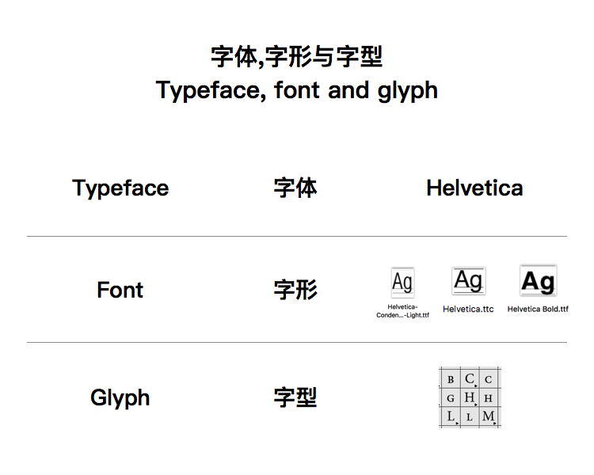
字体、字形、字型
首先「字体（Typeface）」是意义最广层级最高的，比如「Helvetica」是字体。其次是「字形（Font）」，一套字体里可以包含多个字形。比如「Helvetica Condensed」就是一个字形，比如「Helvetica Bold」又是一个字形。在铅字印刷时代，如果印刷厂从字体厂购买「Helvetica Condensed」字形，会收到一个小盒子，里面装着许多字母，只包含「Helvetica Condensed」字母和符号们。而在数字时代，字形就是一个文件。最后是「字型（Glyph）」，英文字体的每个字母，中文字体的每个字，每个拉丁数字，每个特殊符号都是一个字型，字形是无数字型的集合。
一个好的字体会尽量包含尽量多的字型，尤其是对于中文字体，字型越多就意味着能打出来的字更多，就不会出现生僻字无字体的情况。在《信息交换用汉字编码字符集·基本集》中规定，GB 2312 标准共收录 6763 个汉字，覆盖中国大陆 99.75% 的使用频率；GBK 标准共收录 21886 个汉字和图形符号；GB 18030 共收录汉字 70244 个。
你可能在很多美剧和综艺的字幕中看到过这种尴尬情况，这就是一个字型覆盖不全的例子：
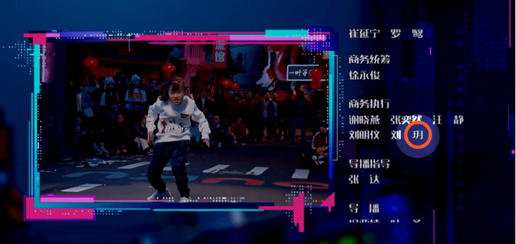
《这就是街舞》的字幕字体覆盖不全问题
数字与符号风格（Numbers and Symbol）
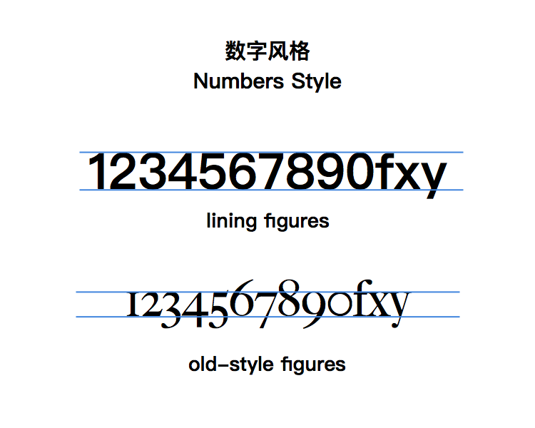
数字风格
如果你的内容中经常出现数字与符号，你或许需要考虑数字与符号的风格。对于数字，有 old-style figures 和 lining figures 两种。old-style figures 拥有大小写字母一样的升部和降部，适合大小写字母协调；Lining 则高度统一，找了个大小写协调的中间值，同时更适合与中文配合。我们一般见到的数字风格都是 Lining figures，但 Old-style figures 也有用处，它显得更加时尚，也可以非常古典，而且作为页码等小元素时能更安静的待在角落里不去影响正文内容。
以此类推，除了数字，在内容中包含特殊符号的时候，也要确保所选字体中包含你要用到的特殊符号。
四步选字体
学了这么多，终于可以选字体了！选对字体的重要性不必多说，如果内容是菜肴，字体就是装盘，一个正确的字体选择可以让好的内容读起来更舒适，表达力更强；一个错误的字体选择可以给人「驴唇不对马嘴」的感觉甚至难以阅读。
实际上，选择字体也是有套路的，只要随着这个套路进行下去，就能轻松得到一个「正确」的字体。接下来，你将作为一个专业的中国风音乐制作人，被 Apple Store 邀请进行一场关于「如何使用 iPad 制作中国风音乐」的演讲，让我们一起想象配合演讲的幻灯片应该使用什么字体吧。
1. 根据内容
首先，排版是为内容服务的，所以选字体的第一步就是考虑内容的主题，调性和价值观。
如果无论你不是作者，而是专业的设计人员，就要确保你完全了内容是什么，是个什么感觉。如果是文章的排版，这应该通读文章，如果你是做一张报表，则应该了解报表在报告什么东西。如果是给一个机构或者公司做设计，这应该和他们的品牌形象以及视觉规范契合。
对于我们的情况，可以得出：
- 是 iPad 相关内容，属于科技行业，应该有科技感；
- 是中国风音乐相关内容，应该有古典或民族的感觉；
- 经验分享相关内容，应该有亲近，容易接触的感觉。
基于上面的分析，想一想我们学过的相关有关字体知识：
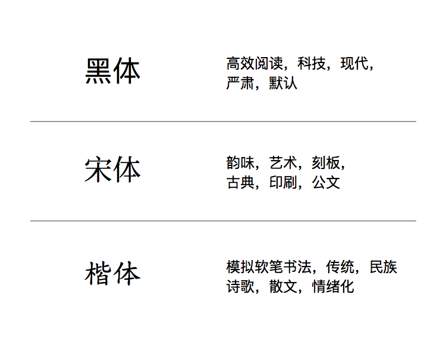
黑体，宋体，楷体所传达的关键词
貌似宋体和黑体都是合理的选择，楷体过于抒情与民族化可以排除，宋体更加凸现「中国风」而黑体更有「科技感」。字体选择有了雏形，我们进入下一步。
2. 考虑媒介
你的设计是在纸张上呈现还是屏幕上呈现？屏幕有多大？纸张有多大？是握在手里仔细观察还是贴在墙上广而告之？纸又是什么纸？所有关于「媒介」的问题都应该在你的考虑之中，它们会影响到你的设计。
对于我们的情况，可以得出：
- 将用投影仪展现幻灯片，为了保证字体不会糊在一起，应该避免较粗的字体以及字怀小的字体
- 三十人左右，字号不能太小，需要在大字号下显示效果好的字体
基于上面的分析，我们需要的是一个正常字重，较大字号时效果好的字体，而且字怀也不能太大。面对这个需求，很多黑体都可以满足，但一部分衬线过于夸张的宋体已经可以排除了。
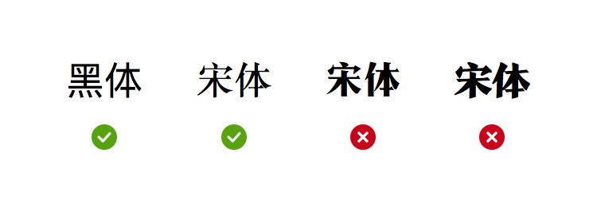
排除部分过粗和衬线夸张的宋体
3. 前后语境
内容和媒介已经无误了，下一步是什么呢？遇到问题时永远记得，排版是为了内容服务的。当你把设计放在特定语境的时候，可能会有不一样的效果。比如在英文排版行业，人们对 Comic Sans 的厌烦程度达到了即使 Comic Sans 用对了也会让人讨厌的程度；Arial 被许多设计师认为是 Helvetica 的低质山寨版，于是使用 Arial 可能会引起设计师的不爽等等。
下面让我们考虑考虑自己的幻灯片是在什么语境下播放的呢？
- 是辅助演讲的工具，所以不应该分散过多的注意力；
- 只属于我一个人，只属于这场演讲，所以这可能是一次个人品牌的宣传机会；
- 是在 Apple Store 中进行，苹果经常使用黑体，我们应该保持统一，还是应该更加独特？
基于上面的分析，尤其是由于这是属于我个人的演讲，而且是在几乎完全使用黑体的苹果店内进行，我更愿意选择一款宋体，不仅有了「中国风」，而且足够让我的个人形象和 Apple 独立开来，即我与 Apple 合作但我不属于 Apple。
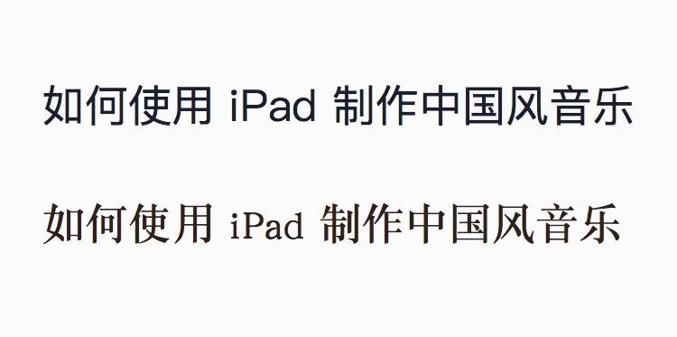
黑体和宋体的对比
综上，我便用套用公式一般的三个步骤选择好了一款字体：宋体，正常字重和较大字号时显示效果好，字怀不能太小。我们按照这些规矩去寻找合适的字体即可，但在最终确定下来之前，还有一步要走。
4. 复查
选好字体后，还要进行一下检查。一方面是对文稿质量的检查，字体素质的检查。
如果文稿内容有错误，你的设计自然不会受到应有的重视。请确保标点的使用和语法没有错误，没有错别字。虽然严格意义上不是设计师的工作，但你一定不希望文稿中的错别字，坏了你的设计。
更加重要的是字体方面的检查，它可以确保不会在设计将要完成时改变字体，那时候的修改成本可就太高了。需要检查的内容有：
- 字体素质：一款字体可能有很好看的中文，但其配套的英文也许非常糟糕，此时你就要考虑是否要放弃这个字体或者用另一套英文字体补位了。除此之外还有数字好看不好看，符号（字型）够不够，字重够不够用等等。
- 版权问题：商用字体一定要得到字体授权（尤其是中文字体，设计周期很长，而且被告赔偿数量也很大）；非商业字体请确定你的用途与商业无关；免费字体则可以放心使用。你可以回到第三章和答疑汇总 01 了解字体版权相关的内容。
哇，万能字体！
不要相信上面这句话。
世界上是否存在一套万能的字体？或许吧，著名的非衬线字体 Helvetica 的应用面之广是你无法想象的，首先他是一些排版软件的默认字体；以 Helvetica 作为标志字体的大公司就数不胜数，MUJI，3M，北面，奥林巴斯等四十多个大品牌都在其中；Helvetica 也曾是 iOS 系统默认字体；伦敦地铁图也在使用 Helvetica；美国政府也在使用 Helvetica 作为政府表格的字体。（详细列表：40 EXCELLENT LOGOS CREATED WITH HELVETICA）
无处不在的 Helvetica
这么多好设计都在用 Helvetica，那我要不要使用呢？
我的回答是：不要盲目使用。Helvetica 的字体设计非常优秀，但由于 Helvetica 使用太多，已经成为了一种「空气一样」的字体，没有什么特殊的味道。但又到处都是，不可或缺。这种「空气一样」的感觉，貌似很符合 MUJI 和 3M 的感觉，就是合理的。
所以对于字体选择，没有坏的字体，只有不适合的选择。我还是会按部就班地走完选择字体的四个步骤，四个步骤结束之后，很有可能最终答案不是「万能字体」，但如果是的话，也是合理的。
字体选择练习题
又到了做练习题的时间，尝试使用选择字体的四个步骤为下面的题目来分别挑选一个展示字体和一个正文字体。建议先自己想出答案，再看答案。我的字体选择仅供参考，并非是最正确最唯一的解法，欢迎一起讨论。
1. 少数派的地铁出入口广告牌
未来某天，少数派要设计一款放在地铁出入口的广告牌。其需要展示的内容有：「妙用 Alfred 让你最近使用的文件触手可及」、少数派 LOGO 和「sspai.com」。请选择一款展示字体以及正文字体分别作为大标题和附属文字。
解：
我们先检查一下内容，分为三个部分，而需要我们设计的部分只有「高品质数字消费指南」和「sspai.com」两个部分，LOGO 可以直接套用。考虑到少数派是科技媒体，应当选择非衬线体，于是英文字体也应该是一款非衬线字体。
接下来是考虑媒介，地铁出入口的广告牌由于离观看者较远，我打算使用粗暴的巨大字体呈现「妙用 Alfred 让你最近使用的文件触手可及」，应选择一款在大字号下表现较好的字体，同时可能用到较粗的字重，所以要考虑到字体的字重够不够用。
结合前后语境我发现少数派是有固定的视觉风格的，比如红白黑配色，以及使用文悦新青年体配合。我们完全可以将其应用到这块广告牌上。于是我的字体选择有了巨大的改变，从之前的较粗，字号较大的字体一下变成了文悦新青年体。
复查环节，确定文悦新青年体的版权许可即可（少数派购买了文悦新青年体的版权）。
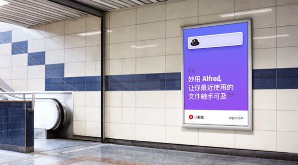
最终效果图
2. 校园歌唱比赛的海报
位于三线城市的牟橙市第二中学为了在素质教育上有所突破，尝试举办校园歌唱比赛，我们要为其设计海报。需要显示的内容有：标题「二中歌王争霸赛」，以及地点，时间，举办方等等信息。
解：
先来看一下内容，「二中歌王争霸赛」如此中二的标题，加上活动本身有很强的竞争性，我们可以选择一款比较夸张，有力道的标题字体。我的选择是「造字工房力黑体」。对于正文字体，使用衬线字体就会显得过于正式了，于是选择一款稍微冷静的黑体即可。你可能会问，为什么不再次使用「造字工房力黑体」？这是因为如果同样的字体太多，就会削弱这个字体的独特感，标题就难以突出了。
第二步考虑媒介，作为海报，观看者可远可近。标题可用较大的字号，确保在远处也能看见，而时间地点等信息可使用较小的字号，因为这些信息并不是第一时间需要知道的，在远处看不清的东西反而能带来好奇心，驱使人们走过去看。
第三步考虑语境，比赛的举办方是学校，我们应该考虑到学校的形象问题，选择合适的字体。作为一个比赛，我们并不需要完全应用学校的视觉风格，套用学校使用的字体。但要完整地展示原版校标，在深色底上可以使用反白的手法。
最后一步进行复查。检查一下内容，尤其是有时间，地点等信息时一定要避免「二月三十号」之类的错误出现。作为一个非商业活动，我们可以有更多的非商业字体选择，如果有赞助商和冠名广告等，需要考虑字体的非商业授权范围。造字工房力黑体正好是一款非商用使用下的免费字体，适合现在的情境。
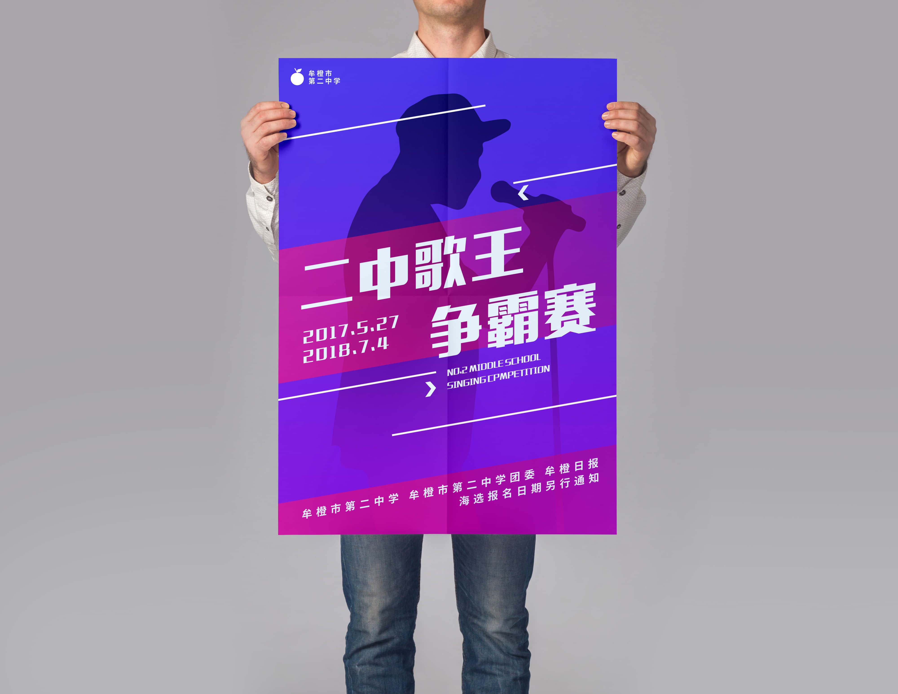
最终效果图
简单应用了一下字体，虽然还有很多要改的东西，但主要感觉上是对的。顺带一提，你可能发现上面两个海报和广告的展现方式都是「在生活中的」，其实这不是我真的去了那里，而是用 mockup 的模板文件应用而来，mockup 可以更好的展现你的设计在实际生活中的效果，我们也会在未来的章节中讲解如何运用 mockup。
推荐阅读
Thinking With Type—Ellen Lupton
Ellen Lupton 是一位著名的平面设计师，作家以及教育家。她对排版学有非常深刻的研究，《Thinking With Type》极其明确的说明了平面设计中的各种排版知识，简单易懂。适用于所有和文字打交道的人。据说 Kindle 版本的阅读体验非常糟糕，推荐阅读实体书。
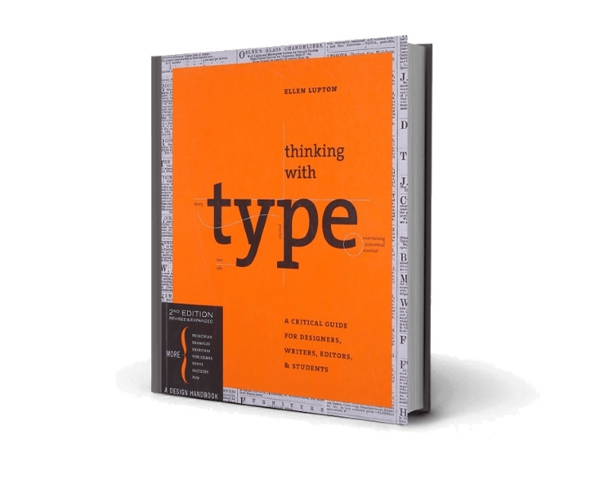
Thinking With Type
Type is Beautiful 的两个系列文章
上一章，我们已经介绍了 Type is Beautiful 网站。在教程介绍完字体相关知识后，推荐同学们去看看这份书单，以及 Type is Beautiful 的基础文章汇总，都是非常棒的入门文章，可以做为知识的巩固。
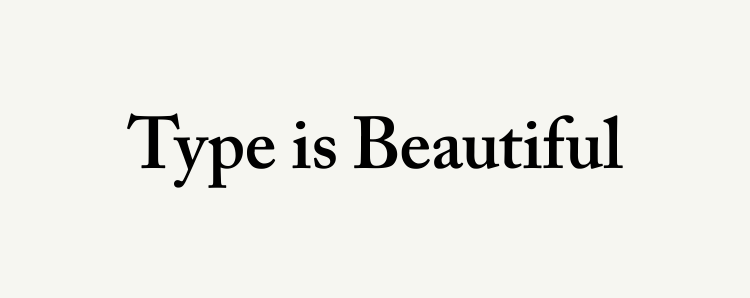
Type is Beautiful
结语
本章我们讲解了字体选择方面的知识：首先学习了选择字体时需要知道的基础知识，然后以「如何使用 iPad 制作中国风音乐 幻灯片」的情境介绍了字体的四个步骤，并运用这四个步骤做了练习。希望你已经掌握了选择字体的方法。
我们将会在下一章进入「配色」相关的内容，是我们进入最终排版相关内容之前需要学习的最后一个知识点，感谢你的学习。
上一期
下一期
精选评论（2） 我的评论